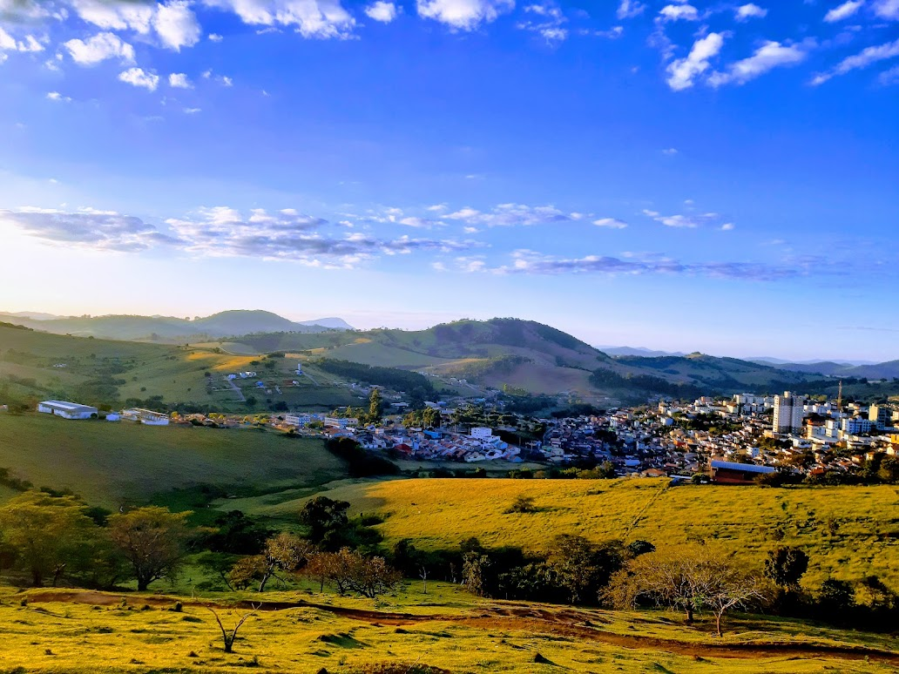
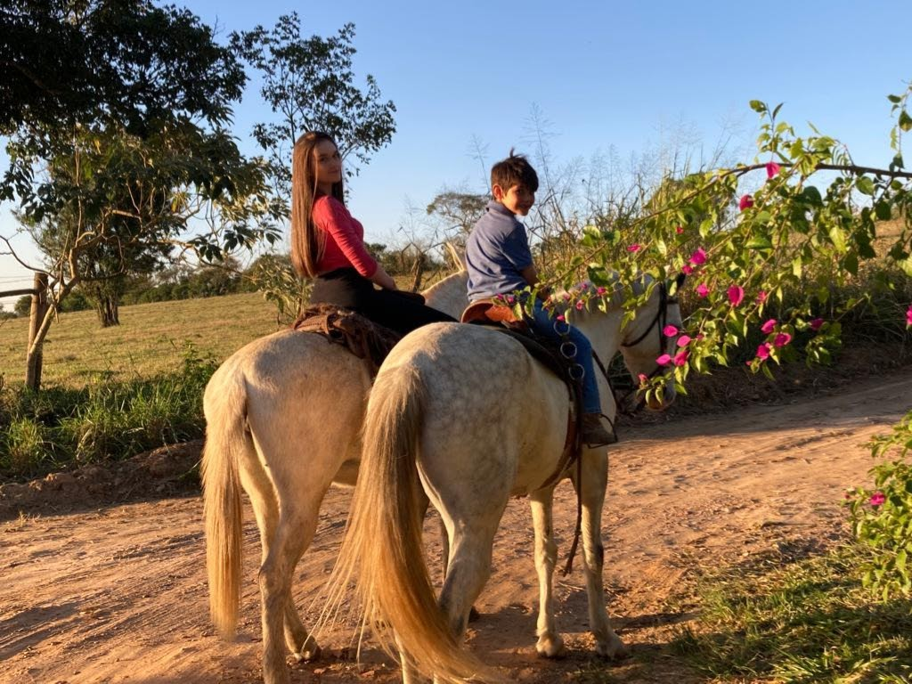

28 junho de 2023
Minas Gerais

Se você tem um amor genuíno pela natureza, encontrará a beleza em todos os cantos.Mas lembre-se de que, quando a última árvore for derrubada, o último peixe for pescado e o último rio estiver contaminado, só então perceberemos que o dinheiro não pode ser saboreado ou bebido.
10 junho de 2023
Elias Fausto

Se há algo que verdadeiramente amo, é desfrutar do ar puro, saborear frutas colhidas diretamente da árvore, apreciar o sereno da natureza, encontrar a paz, sentir a brisa refrescante, ouvir a sinfonia dos pássaros e dar um passeio tranquilo a cavalo. Cada um desses momentos é como uma recarga para a minha alma, uma oportunidade de me reconectar com a essência da vida e apreciar a beleza simples que o mundo tem a oferecer.